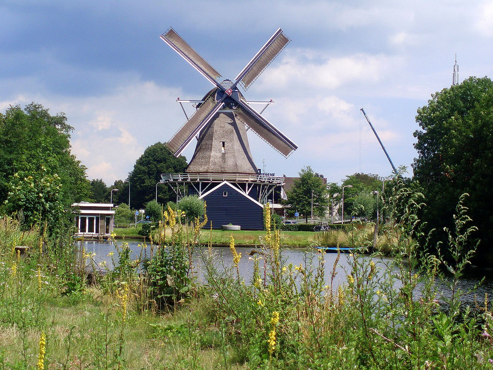

Museum de Fundatie is een Nederlands museum voor beeldende kunst met twee locaties in Overijssel: aan de Blijmarkt in Zwolle en in Kasteel het Nijenhuis in Wijhe.
Dit voormalige Paleis van Justitie werd tussen 1838 en 1841 gebouwd in neoclassicistische stijl. De markante, symmetrische gevels aan de stadszijde, ieder met een driehoekig fronton gesteund door zes zuilen, zijn vrijwel identiek aan elkaar. In de jaren 1980 werd het rijksmonument grondig verbouwd
om te dienen als huisvesting van de Afdeling Informatieverwerking van de Rijksplanologische Dienst. Na een tweede verbouwing bood het van 1994 tot
2001 onderdak aan het Museum voor Naïeve en Outsiderkunst De Stadshof. In 2004–2005 werd het verbouwd om plaats te bieden aan de Zwolse locatie
van Museum de Fundatie. In 2012–2013 werd het museum uitgebreid met "de wolk", een ellipsvormige expositieruimte op het dak van het bestaande gebouw.
Deze toevoeging is aan de buitenkant bekleed met 55.000 driedimensionale witblauw geglazuurde tegels.
De in de 14e eeuw ontstane havezate het Nijenhuis is gesitueerd in Salland tussen de plaatsen Wijhe en Heino op het grondgebied van de gemeente Olst-Wijhe.
Het is eigendom van de provincie Overijssel en werd van 1958 tot aan zijn dood in 1984 bewoond door de kunstverzamelaar Dirk Hannema. Vanaf september
2004 werd het Nijenhuis op vaste openingstijden opengesteld voor het publiek. De beeldentuin van 4,5 hectare op het landgoed van de havezate is één van de
grotere van Nederland. In de tuin zijn ruim honderd beelden uit de periode vanaf de late 18de eeuw te zien.
De Passiebloem is een achtkantige stelling-oliemolen met voorraadschuren uit 1776 aan de Vondelkade in Zwolle. In de molen kon 50 last (100.000 kg) zaden, 80.000 koeken
en 530 vaten olie in drie oliekelders worden opgeslagen. In de aangebouwde schuur was ruimte voor 50.000 turven, wat stond beschreven in een aankondiging tot verkoop in 1864.
De molen staat aan de Nieuwe Vecht. Aan deze waterweg stonden vroeger 4 oliemolens die landbouwgewassen uit Twente verwerkten, maar ook van de vlasakkers die in de buurt
lagen. Uit de zaden van het vlas werd lijnzaadolie gewonnen. De naam Vlasakkers leeft nog voort in de naam van een nabijgelegen straat en de naam van een buurthuis. Behalve de
molen zijn ook nog enkele huisjes, van arbeiders die op de velden werkten, bewaard gebleven; de zogenaamde zaaddragershuisjes.
De molen is in 1928 gestopt met produceren en is hierna aangekocht door de gemeente Zwolle. Tot aan de Tweede Wereldoorlog werd hij gebruikt als opslagplaats. In de jaren
dertig liet de Gemeente Zwolle de molen in het kader van een tewerkstellingsproject van werklozen restaureren. Tijdens de oorlog werd hier voedsel voor de gaarkeuken bereid.
Hierna werd er de inboedel bewaard van mensen met schulden.
In 1965 werd de molen gerestaureerd, maar door geldgebrek was het onderhoud een probleem waardoor de 
molen snel achteruit ging. In 1984 werd De Passiebloem opnieuw gerestaureerd, waarna deze op 11 mei 1985 weer in gebruik werd genomen.
In 1988 wilde Koninklijke DSM NV tegenover de molen een 30 meter hoog kantoorgebouw plaatsen. Er werd voorgesteld om de molen te verplaatsen naar de IJsseldijk, zodat hij
wind kon blijven vangen. Het kantoorgebouw is er gekomen, maar de molen kon blijven staan.
In 2000 was de molen opnieuw in het nieuws, omdat PEC Zwolle het Oosterenkstadion wilde uitbouwen. Hierdoor zou de molen onvoldoende wind kunnen vangen en
zou verplaatsing noodzakelijk zijn, die ook ditmaal niet doorging.
De molen is geopend voor publiek op de eerste en derde zaterdag van de maand, van 10 tot 16 uur en de woensdag na de derde zaterdag van 14 tot 16 uur en op afspraak.
De toegang is vrij.